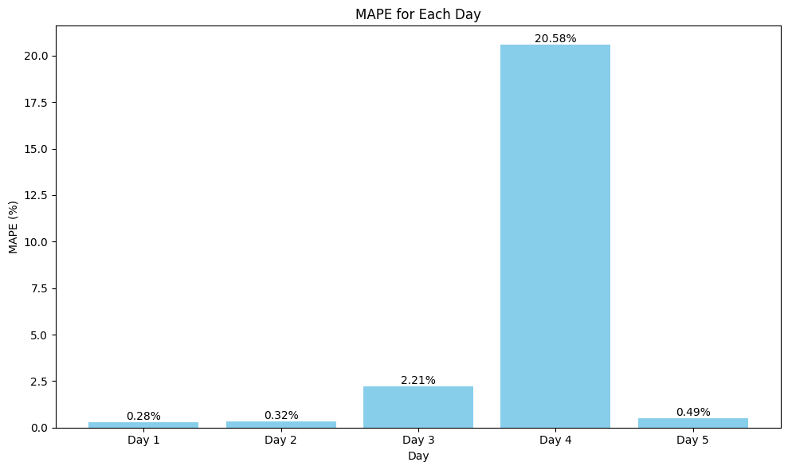

Modelling Data NO2 Daerah Banyuwangi#
import pandas as pd
import joblib
from sklearn.model_selection import train_test_split
from sklearn.preprocessing import MinMaxScaler
from sklearn.multioutput import MultiOutputRegressor
from sklearn.neighbors import KNeighborsRegressor
from sklearn.metrics import r2_score, mean_squared_error, mean_absolute_error, mean_absolute_percentage_error
Membaca Dataset Yang Udah Di Preprocessing#
day1 = pd.read_csv('day1_supervised.csv')
day2 = pd.read_csv('day2_supervised.csv')
day3 = pd.read_csv('day3_supervised.csv')
day4 = pd.read_csv('day4_supervised.csv')
day5 = pd.read_csv('day5_supervised.csv')
# Load the dataset for each day
day1 = pd.read_csv('day1_supervised.csv')
# Tambahkan kolom lag yang hilang jika ada (NaN)
for lag in ['t-2', 't-3', 't-4', 't-5']:
if lag not in day1.columns:
day1[lag] = pd.NA # Menambahkan kolom lag dengan nilai NaN
# Gantikan nilai NaN dengan 0
day1 = day1.fillna(0)
# Split the data into features (X) and target (y)
X = day1.drop(columns=["NO2"])
y = day1["NO2"]
# Split the data into training and test sets (80% train, 20% test)
X_train, X_test, y_train, y_test = train_test_split(X, y, test_size=0.2, random_state=42)
# Normalize the features using MinMaxScaler
scaler = MinMaxScaler()
X_train_scaled = scaler.fit_transform(X_train)
X_test_scaled = scaler.transform(X_test)
# Train a KNN model
knn = KNeighborsRegressor(n_neighbors=5)
knn.fit(X_train_scaled, y_train)
# Save the trained model and scaler
joblib.dump(knn, 'knn_day1_model.pkl')
joblib.dump(scaler, 'scaler_day1.pkl')
# Make predictions on the test set
y_pred = knn.predict(X_test_scaled)
# Calculate MAPE and MSE
mape = mean_absolute_percentage_error(y_test, y_pred)
mse = mean_squared_error(y_test, y_pred)
# Print MAPE and MSE for Day 5
print(f"Day 1: MAPE = {mape:.4f}, MSE = {mse:.4e}")
Day 1: MAPE = 0.2811, MSE = 1.8983e-11
/tmp/ipython-input-1671078935.py:10: FutureWarning: Downcasting object dtype arrays on .fillna, .ffill, .bfill is deprecated and will change in a future version. Call result.infer_objects(copy=False) instead. To opt-in to the future behavior, set `pd.set_option('future.no_silent_downcasting', True)`
day1 = day1.fillna(0)
import pandas as pd
from sklearn.model_selection import train_test_split
from sklearn.preprocessing import MinMaxScaler
from sklearn.neighbors import KNeighborsRegressor
from sklearn.metrics import mean_absolute_percentage_error, mean_squared_error
import joblib
# Load the dataset for Day 2
day2 = pd.read_csv('day2_supervised.csv')
# Tambahkan kolom lag yang hilang jika ada (NaN)
for lag in ['t-3', 't-4', 't-5']:
if lag not in day2.columns:
day2[lag] = pd.NA # Menambahkan kolom lag dengan nilai NaN
# Gantikan nilai NaN dengan 0
day2 = day2.fillna(0)
# Split the data into features (X) and target (y)
X = day2.drop(columns=["NO2"])
y = day2["NO2"]
# Split the data into training and test sets (80% train, 20% test)
X_train, X_test, y_train, y_test = train_test_split(X, y, test_size=0.2, random_state=42)
# Normalize the features using MinMaxScaler
scaler = MinMaxScaler()
X_train_scaled = scaler.fit_transform(X_train)
X_test_scaled = scaler.transform(X_test)
# Train a KNN model
knn = KNeighborsRegressor(n_neighbors=5)
knn.fit(X_train_scaled, y_train)
# Save the trained model and scaler
joblib.dump(knn, 'knn_day2_model.pkl')
joblib.dump(scaler, 'scaler_day2.pkl')
# Make predictions on the test set
y_pred = knn.predict(X_test_scaled)
# Calculate MAPE and MSE
mape = mean_absolute_percentage_error(y_test, y_pred)
mse = mean_squared_error(y_test, y_pred)
# Print MAPE and MSE for Day 2
print(f"Day 2: MAPE = {mape:.4f}, MSE = {mse:.4e}")
Day 2: MAPE = 0.3231, MSE = 2.8529e-11
/tmp/ipython-input-2746375658.py:17: FutureWarning: Downcasting object dtype arrays on .fillna, .ffill, .bfill is deprecated and will change in a future version. Call result.infer_objects(copy=False) instead. To opt-in to the future behavior, set `pd.set_option('future.no_silent_downcasting', True)`
day2 = day2.fillna(0)
# Load the dataset for Day 3
day3 = pd.read_csv('day3_supervised.csv')
# Tambahkan kolom lag yang hilang jika ada (NaN)
for lag in ['t-4', 't-5']:
if lag not in day3.columns:
day3[lag] = pd.NA # Menambahkan kolom lag dengan nilai NaN
# Gantikan nilai NaN dengan 0
day3 = day3.fillna(0)
# Split the data into features (X) and target (y)
X = day3.drop(columns=["NO2"])
y = day3["NO2"]
# Split the data into training and test sets (80% train, 20% test)
X_train, X_test, y_train, y_test = train_test_split(X, y, test_size=0.2, random_state=42)
# Normalize the features using MinMaxScaler
scaler = MinMaxScaler()
X_train_scaled = scaler.fit_transform(X_train)
X_test_scaled = scaler.transform(X_test)
# Train a KNN model
knn = KNeighborsRegressor(n_neighbors=5)
knn.fit(X_train_scaled, y_train)
# Save the trained model and scaler
joblib.dump(knn, 'knn_day3_model.pkl')
joblib.dump(scaler, 'scaler_day3.pkl')
# Make predictions on the test set
y_pred = knn.predict(X_test_scaled)
# Calculate MAPE and MSE
mape = mean_absolute_percentage_error(y_test, y_pred)
mse = mean_squared_error(y_test, y_pred)
# Print MAPE and MSE for Day 3
print(f"Day 3: MAPE = {mape:.4f}, MSE = {mse:.4e}")
Day 3: MAPE = 2.2121, MSE = 3.8684e-11
/tmp/ipython-input-4225908338.py:10: FutureWarning: Downcasting object dtype arrays on .fillna, .ffill, .bfill is deprecated and will change in a future version. Call result.infer_objects(copy=False) instead. To opt-in to the future behavior, set `pd.set_option('future.no_silent_downcasting', True)`
day3 = day3.fillna(0)
# Load the dataset for Day 4
day4 = pd.read_csv('day4_supervised.csv')
# Tambahkan kolom lag yang hilang jika ada (NaN)
if 't-5' not in day4.columns:
day4['t-5'] = pd.NA # Menambahkan kolom lag dengan nilai NaN
# Gantikan nilai NaN dengan 0
day4 = day4.fillna(0)
# Split the data into features (X) and target (y)
X = day4.drop(columns=["NO2"])
y = day4["NO2"]
# Split the data into training and test sets (80% train, 20% test)
X_train, X_test, y_train, y_test = train_test_split(X, y, test_size=0.2, random_state=42)
# Normalize the features using MinMaxScaler
scaler = MinMaxScaler()
X_train_scaled = scaler.fit_transform(X_train)
X_test_scaled = scaler.transform(X_test)
# Train a KNN model
knn = KNeighborsRegressor(n_neighbors=5)
knn.fit(X_train_scaled, y_train)
# Save the trained model and scaler
joblib.dump(knn, 'knn_day4_model.pkl')
joblib.dump(scaler, 'scaler_day4.pkl')
# Make predictions on the test set
y_pred = knn.predict(X_test_scaled)
# Calculate MAPE and MSE
mape = mean_absolute_percentage_error(y_test, y_pred)
mse = mean_squared_error(y_test, y_pred)
# Print MAPE and MSE for Day 4
print(f"Day 4: MAPE = {mape:.4f}, MSE = {mse:.4e}")
Day 4: MAPE = 20.5791, MSE = 3.1408e-11
/tmp/ipython-input-4124852392.py:9: FutureWarning: Downcasting object dtype arrays on .fillna, .ffill, .bfill is deprecated and will change in a future version. Call result.infer_objects(copy=False) instead. To opt-in to the future behavior, set `pd.set_option('future.no_silent_downcasting', True)`
day4 = day4.fillna(0)
# Load the dataset for Day 5
day5 = pd.read_csv('day5_supervised.csv')
# Tambahkan kolom lag yang hilang jika ada (NaN)
if 't-5' not in day5.columns:
day5['t-5'] = pd.NA # Menambahkan kolom lag dengan nilai NaN
# Gantikan nilai NaN dengan 0
day5 = day5.fillna(0)
# Split the data into features (X) and target (y)
X = day5.drop(columns=["NO2"])
y = day5["NO2"]
# Split the data into training and test sets (80% train, 20% test)
X_train, X_test, y_train, y_test = train_test_split(X, y, test_size=0.2, random_state=42)
# Normalize the features using MinMaxScaler
scaler = MinMaxScaler()
X_train_scaled = scaler.fit_transform(X_train)
X_test_scaled = scaler.transform(X_test)
# Train a KNN model
knn = KNeighborsRegressor(n_neighbors=5)
knn.fit(X_train_scaled, y_train)
# Save the trained model and scaler
joblib.dump(knn, 'knn_day5_model.pkl')
joblib.dump(scaler, 'scaler_day5.pkl')
# Make predictions on the test set
y_pred = knn.predict(X_test_scaled)
# Calculate MAPE and MSE
mape = mean_absolute_percentage_error(y_test, y_pred)
mse = mean_squared_error(y_test, y_pred)
# Print MAPE and MSE for Day 5
print(f"Day 5: MAPE = {mape:.4f}, MSE = {mse:.4e}")
Day 5: MAPE = 0.4950, MSE = 2.5660e-11
import matplotlib.pyplot as plt
# Data MAPE untuk setiap hari (berdasarkan hasil sebelumnya)
days = ['Day 1', 'Day 2', 'Day 3', 'Day 4', 'Day 5']
mape_values = [0.2811, 0.3231, 2.2121, 20.5791, 0.4950] # Gantilah dengan nilai MAPE dari setiap hari
# Membuat grafik batang
plt.figure(figsize=(10, 6))
plt.bar(days, mape_values, color='skyblue')
# Menambahkan judul dan label sumbu
plt.title('MAPE for Each Day')
plt.xlabel('Day')
plt.ylabel('MAPE (%)')
# Menampilkan nilai MAPE pada setiap batang
for i, v in enumerate(mape_values):
plt.text(i, v + 0.01, f'{v:.2f}%', ha='center', va='bottom', fontsize=10)
# Menampilkan grafik
plt.tight_layout()
plt.show()
